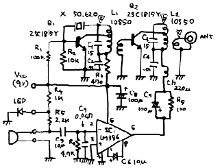
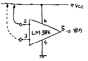

| ・戻る |
第1図に全回路図を示します。
|  |
|
|
この送信機はAMなのに変調トランスが見当たらないですねぇ。 そうです。これはFCZオリジナルの「変調トランスレス変調回路」なのです。
まずはこの変調回路の説明から致しましょう。
第2図はLM386の基本的な回路です。 入力回路に何もつなげないと、出力端子（5判ピン）には電源電圧の1/2の電圧つまり、4.5Vが出ていま
す。
|  |
|
|
LM386の＋入力端子（3番ピン）をプラスの電源につないでみましょう。 出力端子は電源の電圧9Vから0.6V低い電圧8.4Vになります。
それでは＋入力端子を電源からはずし、−入力端子（2番ピン）を電源につないでみましょう。 結果は0.6Vの出力となります。 このことは、＋入力端
子にマイナスの電源をつないでも同じ結果となります。
以上をまとめると、＋入力端子にAFの信号を入れると、
その信号が飽和した場合、出力端子は4.5±3.9Vに振れることになります。 このことは−入力端子の場合も＋と−がひっくり返るだけで同じ値に
なります。
LM386はAFのアンプです。 したがってその出力インピーダンスは数Ωという低いものです。 ですから、この出力端子に送信機の終段を接続すれば、そ
のままAMの変調器になるはずです。
確かにLM386の出力を直接、 送信機の電源につなげばAM変調器にはなりました。 しかし、問題もあったのです。 それは、「変調が浅い」と
言う事でした。
LM386の出力電圧は電源電圧の1/2でしたから、電源電圧が9Vの場合4.5Vになります。 一方、音声の出力はそれが飽和した場合でも±3.9V
にしかなりません。
この場合の変調度を計算して見ると…
変調度＝ ( 3.9/4.5) × 100 ＝ 86.6 (%)
つまり、どんなに大きな声を出してもこの回路では100%の変調は出来ないと言う事です。
そこでR7とC7の意味が出て来るのです。 R7の存在によって送信機の終段に掛かる電圧は低く成ります。 しかし、音声信号はC7をによってバイパス
されますから電圧としての低下は極少なくてすむのです。
終段のコレクタに掛かる直流電圧が3.9Vになったとき100%の変調がかかる事になるのです。
009-3図に実体配線図を示します。 009-1図と照らし合わせて組み立ててください。
アンテナ回路に寺子屋リーズ#205(205) RFパワーメータをつなぎます。 SWをオンし送受切替えSWを送信とします。
寺子屋シリーズ006のRFプローブを発振段のコイルのホット側(009-1図a点)に当 て、テスタの針が最大を示すようにL1のコアを調整します。
終段も同じ様にコイルのホット側(b点)にRFプローブを当て、L2を調整します。 もしこの時、L1の電圧よりL2の電圧のほうが低いようなと きは、発振段が基本波で発振している可能性があります。 L1のコアを押し込んでいくといったん発振が止まり、さらに押し込んでいくと再び発振が始まりま す。 この場合は始めの発振が基本波で、後のほうの発振が3rdオーバトーン発振ですから、コイルを押し込んだ方の状態に調整してください。 そのあと、 パワーメータの振れが最大になるようにします。
ここまで来たらパワーメータをはずしてアンテナを取り付けます。 50MHzの受信機でモニターして見てください。 そして変調されたご自分の信
号が一番大きく聞こえるところにL2を再調整します。 その時の出力を見ていると先程調整したときより少し下がって居るかも知れませんが、調整は「一番声
が大きく聞こえるところ」にセットして下さい。
送信周波数は50.620MHzに固定されています。 したがって受信機もまず50.620MHzを受信してください。この状態で受信する事の出 来る局が現れたら呼んで見て下さい。 だれも居なければCQを出しましょう。 10mWという電力は小さなものですが、アンテナ、コンディションなど条件 さえ良ければかなり遠くの局と交信できると思います。
|
|
|
|